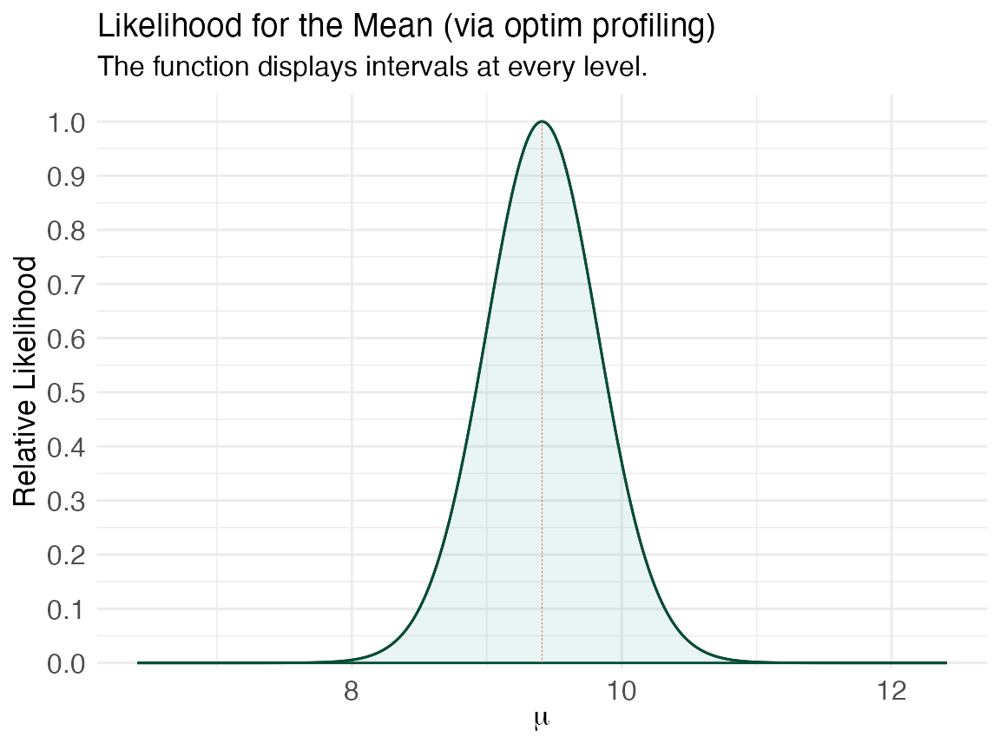
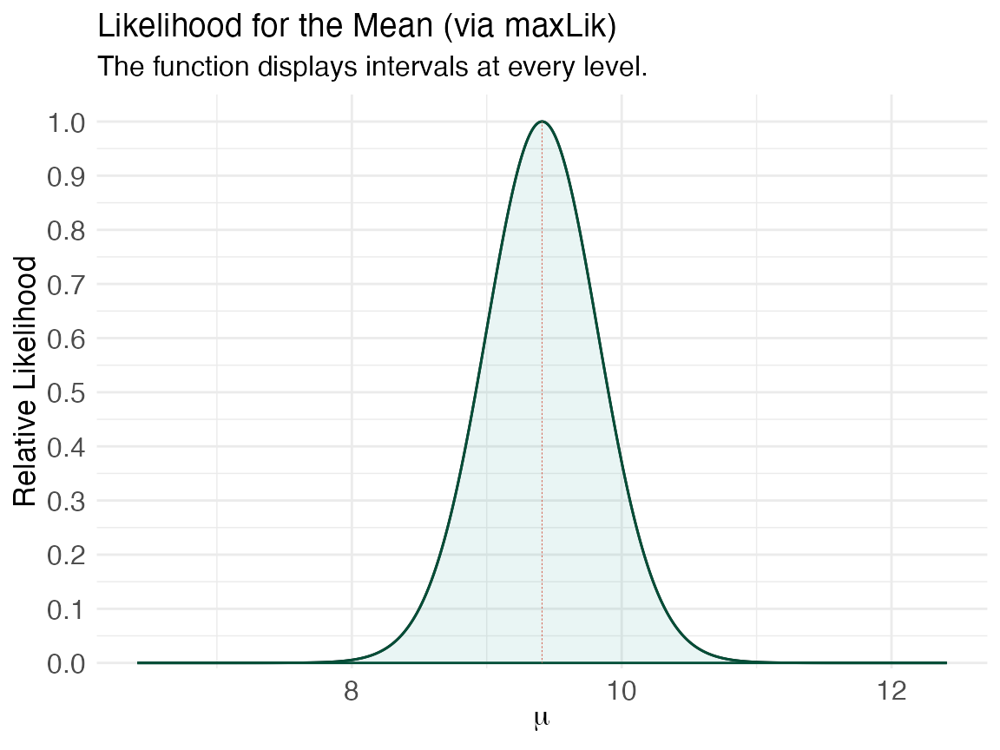
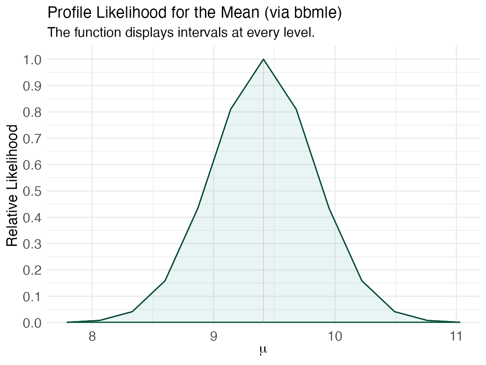
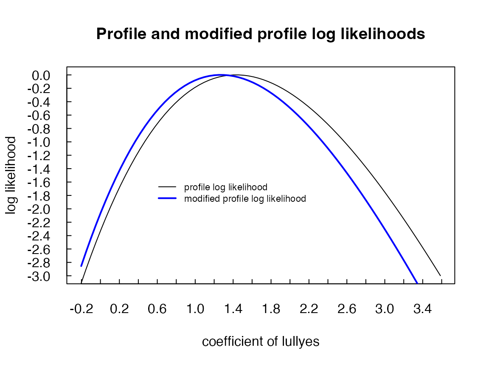
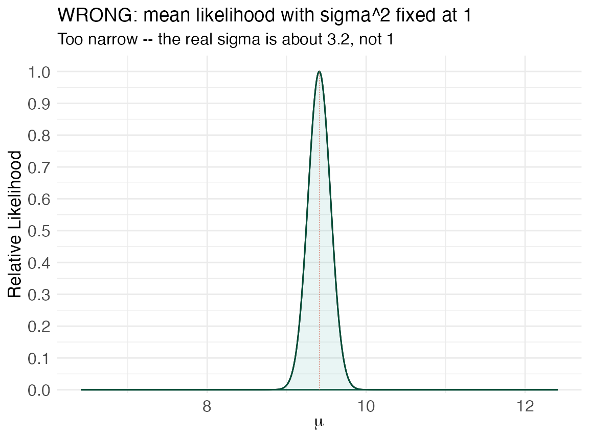
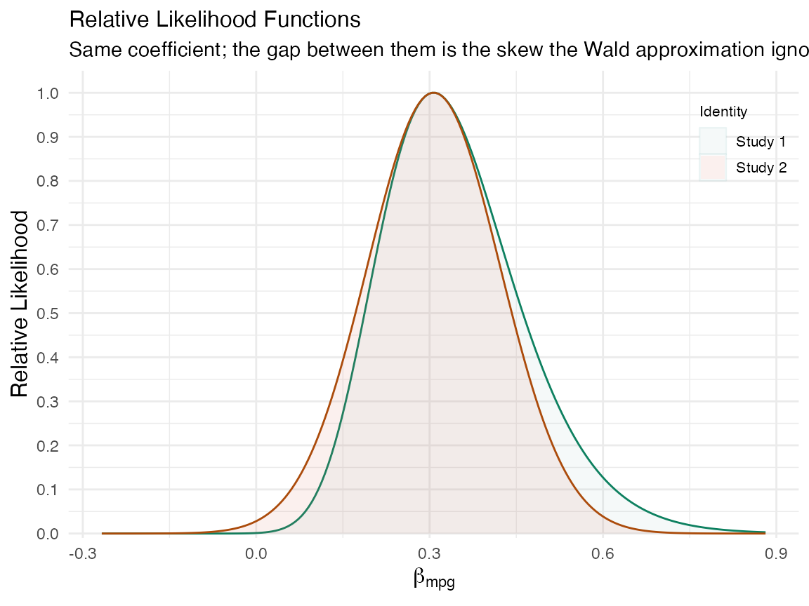

vignettes/likelihood-tools.Rmd
likelihood-tools.RmdR has no shortage of machinery for building likelihoods:
optim() and optimize() in base R,
maxLik, bbmle::mle2(),
ProfileLikelihood, and cond for exact
conditional GLM inference.1
They look different, but for concurve they all reduce to
the same thing: a grid of parameter values and a
profile log-likelihood evaluated on it. This vignette
shows several of those tools feeding one adapter.
Note:
maxLik,bbmle, andcondare notconcurvedependencies, so the chunks that use them run only if you have them installed. Theoptim()route is base R and always runs.
Whatever produces the log-likelihood, this helper normalizes it and
packs it into the five columns concurve uses
(values, likelihood,
loglikelihood, support,
deviancestat) — the object curve_lik() returns
and ggcurve() draws.
as_concurve_lik <- function(values, loglik) {
loglik_rel <- loglik - max(loglik)
support <- exp(loglik_rel)
df <- data.frame(
values = values,
likelihood = support,
loglikelihood = loglik_rel,
support = support,
deviancestat = -loglik_rel
)
class(df) <- c("data.frame", "concurve")
df
}The only rule that matters for validity: when the model has more than one parameter, the log-likelihood you evaluate at each grid point must be profiled over the others (maximized over the nuisance parameters), not merely sliced at their estimates.2 We return to that at the end, because it is the single most common way a “likelihood” plot goes wrong.
Some data to reuse:
optim() (+ observed-information
SEs)
Minimize the negative log-likelihood to get the MLE and, from the Hessian, the observed-information standard errors — exactly the pattern in the pasted script.
nll_normal <- function(theta, x) {
mu <- theta[1]; sigma <- theta[2]
-sum(dnorm(x, mean = mu, sd = sigma, log = TRUE))
}
fit <- optim(c(mu = 8, sigma = 3), nll_normal, x = x,
method = "BFGS", hessian = TRUE)
fit$par
#> mu sigma
#> 9.410091 2.933006
sqrt(diag(solve(fit$hessian))) # SE(mu), SE(sigma)
#> mu sigma
#> 0.4147897 0.2933005To turn this into a likelihood function for the mean,
profile out sigma at each candidate mu — and
here profiling is free, since the conditional MLE of sigma
given mu is closed-form.
n <- length(x)
mu_grid <- seq(fit$par["mu"] - 3, fit$par["mu"] + 3, length.out = 4000)
loglik_mu <- vapply(mu_grid, function(m) {
sigma2_hat <- mean((x - m)^2) # profile: MLE of sigma^2 given mu
-(n / 2) * (log(2 * pi) + log(sigma2_hat) + 1)
}, numeric(1))
lik_optim <- as_concurve_lik(mu_grid, loglik_mu)
ggcurve(lik_optim, type = "l1", nullvalue = round(fit$par["mu"], 2),
xaxis = expression(mu),
title = "Likelihood for the Mean (via optim profiling)")
#> Warning: Using `size` aesthetic for lines was deprecated in ggplot2 3.4.0.
#> ℹ Please use `linewidth` instead.
#> ℹ The deprecated feature was likely used in the concurve package.
#> Please report the issue at <https://github.com/zadrafi/concurve/issues>.
#> This warning is displayed once per session.
#> Call `lifecycle::last_lifecycle_warnings()` to see where this warning was
#> generated.
maxLik
maxLik maximizes a log-likelihood you supply (returning
the value, not its negative) and gives a tidy summary()
with SEs. To get the function rather than just the point, evaluate the
profiled log-likelihood on a grid and hand it to the adapter.
library(maxLik)
#> Loading required package: miscTools
#>
#> Please cite the 'maxLik' package as:
#> Henningsen, Arne and Toomet, Ott (2011). maxLik: A package for maximum likelihood estimation in R. Computational Statistics 26(3), 443-458. DOI 10.1007/s00180-010-0217-1.
#>
#> If you have questions, suggestions, or comments regarding the 'maxLik' package, please use a forum or 'tracker' at maxLik's R-Forge site:
#> https://r-forge.r-project.org/projects/maxlik/
loglik_normal <- function(theta, x) {
sum(dnorm(x, mean = theta[1], sd = sqrt(theta[2]), log = TRUE))
}
start <- c(mu = 8, sig2 = 9)
theta_mle <- maxLik(loglik_normal, start = start, x = x)
summary(theta_mle)
#> --------------------------------------------
#> Maximum Likelihood estimation
#> Newton-Raphson maximisation, 7 iterations
#> Return code 8: successive function values within relative tolerance limit (reltol)
#> Log-Likelihood: -124.7483
#> 2 free parameters
#> Estimates:
#> Estimate Std. error t value Pr(> t)
#> mu 9.4101 0.4153 22.657 < 2e-16 ***
#> sig2 8.6025 1.7124 5.024 5.07e-07 ***
#> ---
#> Signif. codes: 0 '***' 0.001 '**' 0.01 '*' 0.05 '.' 0.1 ' ' 1
#> --------------------------------------------
# profile likelihood for mu, reusing the closed-form sigma^2 profile
loglik_mu2 <- vapply(mu_grid, function(m) {
loglik_normal(c(m, mean((x - m)^2)), x = x)
}, numeric(1))
ggcurve(as_concurve_lik(mu_grid, loglik_mu2), type = "l1",
nullvalue = round(coef(theta_mle)[1], 2),
xaxis = expression(mu),
title = "Likelihood for the Mean (via maxLik)")
bbmle::mle2() with built-in profiling
bbmle is purpose-built for this: mle2()
fits by maximum likelihood and profile() returns the
profile likelihood for each parameter, which is exactly what we want.
bbmle reports the profile on the signed square-root
deviance
()
scale; squaring recovers the deviance, and
recovers the relative likelihood.
library(bbmle)
#> Loading required package: stats4
#>
#> Attaching package: 'bbmle'
#> The following object is masked from 'package:miscTools':
#>
#> stdEr
nll <- function(mu, sigma) -sum(dnorm(x, mean = mu, sd = sigma, log = TRUE))
m <- mle2(nll, start = list(mu = 8, sigma = 3), data = list(x = x))
pr <- profile(m)
pr_mu <- as.data.frame(pr) # columns: param, z, par.vals...
pr_mu <- pr_mu[pr_mu$param == "mu", ]
mu_vals <- pr_mu[["par.vals.mu"]]
if (is.null(mu_vals)) mu_vals <- pr_mu[["mu"]] # column name varies by version
lik_bbmle <- as_concurve_lik(mu_vals, -0.5 * pr_mu$z^2) # loglik_rel = -z^2/2
ggcurve(lik_bbmle, type = "l1", nullvalue = round(coef(m)["mu"], 2),
xaxis = expression(mu),
title = "Profile Likelihood for the Mean (via bbmle)")
cond
For a logistic model, cond computes higher-order
exact conditional likelihood inference for a
coefficient of interest, eliminating the nuisance parameters by
conditioning rather than by asymptotic approximation.2 This is the
same spirit as the exact conditional odds-ratio likelihood in the
Constructing Valid Likelihood Functions vignette, but for a
full regression.
library(cond)
#> Loading required package: statmod
#> Loading required package: survival
#>
#> Package "cond" 1.2-4 (2025-05-22)
#> Copyright (C) 2000-2025 A. R. Brazzale
#>
#> This is free software, and you are welcome to redistribute
#> it and/or modify it under the terms of the GNU General
#> Public License published by the Free Software Foundation.
#> Package "cond" comes with ABSOLUTELY NO WARRANTY.
#>
#> type `help(package="cond")' for summary information
data(babies)
mod <- glm(cbind(r1, r2) ~ day + lull - 1, family = binomial, data = babies)
cond_fit <- cond(mod, offset = lullyes) # exact conditional inference for 'lull'
summary(cond_fit)
#>
#> Formula: cbind(r1, r2) ~ day + lull - 1
#> Family: binomial
#> Offset: lullyes
#>
#> Estimate Std. Error
#> uncond. 1.432 0.7341
#> cond. 1.270 0.6888
#>
#> Confidence intervals
#> --------------------
#> level = 95 %
#> lower two-sided upper
#> Wald pivot -0.006514 2.871
#> Wald pivot (cond. MLE) -0.080180 2.620
#> Likelihood root 0.122800 3.086
#> Modified likelihood root 0.010690 2.755
#> Modified likelihood root (cont. corr.) -0.152300 3.097
#>
#> Diagnostics:
#> -----------
#> INF NP
#> 0.07596 0.28882
#>
#> Approximation based on 20 points
plot(cond_fit, which = 2) # conditional (modified profile) likelihood
#> Warning in par(old.par): graphical parameter "cin" cannot be set
#> Warning in par(old.par): graphical parameter "cra" cannot be set
#> Warning in par(old.par): graphical parameter "csi" cannot be set
#> Warning in par(old.par): graphical parameter "cxy" cannot be set
#> Warning in par(old.par): graphical parameter "din" cannot be set
#> Warning in par(old.par): graphical parameter "page" cannot be setcond plots the conditional and modified-profile
likelihoods itself; to render them in concurve, extract its
grid of values and conditional log-likelihood and pass them to
as_concurve_lik() as above.
The pasted script contains a
likelihood.normal.mu(mu, sig2 = 1, x) that fixes
.
That is a slice through the likelihood at an assumed
variance, not a profile. It peaks in the right place but carries the
wrong curvature — so every interval read off it is wrong unless
really is 1.
loglik_slice <- vapply(mu_grid, function(m) {
-0.5 * sum((x - m)^2) # fixes sigma^2 = 1
}, numeric(1))
lik_slice <- as_concurve_lik(mu_grid, loglik_slice)
ggcurve(lik_slice, type = "l1", nullvalue = round(fit$par["mu"], 2),
xaxis = expression(mu),
title = "WRONG: mean likelihood with sigma^2 fixed at 1",
subtitle = "Too narrow -- the real sigma is about 3.2, not 1")
Compare its width to the profiled version from Route 1: the slice is
far too tight because it pretends the variance is known and small. When
you build a likelihood with any of the tools above, profile the nuisance
parameters — optim() over them,
bbmle::profile(), maxLik on a profiled
objective, or a package like cond that conditions them away
exactly.2,3
The payoff of building likelihoods properly is that they line up with
the consonance (P-value) function for the same parameter — the two are
coordinate views of one inferential object. Here we make that visible
with plot_compare() using the native constructors
curve_lik_glm() and curve_analytic() (this
section evaluates when those functions are available in your installed
version of concurve).
mod <- glm(am ~ mpg, family = binomial, data = mtcars)
est <- coef(mod)["mpg"]
se <- sqrt(diag(vcov(mod)))["mpg"]
# profile likelihood: nuisance intercept maximized out at every grid point
lik_prof <- curve_lik_glm(mod, "mpg", steps = 200)
# Wald likelihood: the normal approximation implied by (est, se) --
# exactly the likelihood the consonance function from curve_analytic encodes
grid <- lik_prof[[1]]$values
lik_wald <- as_curve_lik(grid, dnorm(grid, mean = est, sd = se, log = TRUE))
plot_compare(lik_prof[[1]], lik_wald[[1]], type = "l1",
title = "Profile vs Wald Likelihood",
subtitle = "Same coefficient; the gap between them is the skew the Wald approximation ignores",
xaxis = expression(beta[mpg]))
The two curves agree near the maximum and part company in the shoulders — which is precisely where interval limits live. The numeric version of the same statement: the 1/6.83 support interval from the profile likelihood reproduces the 95% consonance interval from the profile-based function, while the Wald consonance interval matches the Wald likelihood.
# 95% consonance interval, Wald construction
cons <- curve_analytic(estimate = est, se = se, dist = "z")
ci95 <- cons[[1]][which.min(abs(cons[[1]]$intrvl.level - 0.95)),
c("lower.limit", "upper.limit")]
rbind(
`profile 1/6.83 support` = unlist(curve_support(lik_prof[[1]], 6.83)[c("lower.limit","upper.limit")]),
`Wald 1/6.83 support` = unlist(curve_support(lik_wald[[1]], 6.83)[c("lower.limit","upper.limit")]),
`Wald 95% consonance` = unlist(ci95)
)
#> lower.limit upper.limit
#> profile 1/6.83 support 0.12184097 0.5875499
#> Wald 1/6.83 support 0.08183696 0.5322194
#> Wald 95% consonance 0.08194283 0.5321136The Wald support interval and the Wald consonance interval are identical by construction ( at is ); the profile versions differ from both exactly as much as the likelihood is skewed. Report the profile-based ones.
If you want any of the guarded routes to run when the vignettes build
on CRAN, add the packages to Suggests in
DESCRIPTION (maxLik, bbmle,
cond) and keep the requireNamespace() guards —
that is the pattern CRAN expects for optional, illustrative
dependencies.
Please remember to cite the packages that you use.
citation("concurve")
#> To cite package 'concurve' in publications use:
#>
#> Rafi Z, Vigotsky A (2026). _concurve: Computes and Plots
#> Compatibility (Confidence) Intervals, P-Values, S-Values, &
#> Likelihood Intervals to Form Consonance, Surprisal, & Likelihood
#> Functions_. R package version 3.0.2,
#> <https://CRAN.R-project.org/package=concurve>.
#>
#> Rafi Z, Greenland S (2020). "Semantic and Cognitive Tools to Aid
#> Statistical Science: Replace Confidence and Significance by
#> Compatibility and Surprise." _BMC Medical Research Methodology_,
#> *20*, 244. ISSN 1471-2288. doi:10.1186/s12874-020-01105-9
#> <https://doi.org/10.1186/s12874-020-01105-9>.
#> <https://doi.org/10.1186/s12874-020-01105-9>.
#>
#> To see these entries in BibTeX format, use 'print(<citation>,
#> bibtex=TRUE)', 'toBibtex(.)', or set
#> 'options(citation.bibtex.max=999)'.